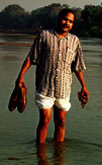

WEEKEND THOUGHTS # 3

Hi.. ORNETTERS:
Yet another weekend is coming up and it's time for
another article for the "Weekend Thoughts" column. This week's
article has been contributed by Somdutt Behura whom I will be
introducing soon. The topic of this weekend is ATHEISM. Somdutt has
sent a personal correspondence he had with one of his friends on the
above topic. Atheism...hmm...sounds controversial.
But...hey...everything is controversial in this world. So, why not
dwell a bit on this topic. I have been told that this topic will be
too heavy for the weekend [ to quote (from a personal friend): Well,
it'll take a lot more than a weekend; at least for me...too serious
stuff. I am not sure about people on Ornet. May be only Bijoy babu
will read it thru. Can't we have something less serious, light stuff.
(After all in these time and days, everything's fat-free and light,
even oils are fat-free; well, the very definition of fat is at risk)
I am not trying to undermine the importance or richness of the
article here...]. To tell the truth, I have enjoyed the article and
the views presented by Somdutt. It is very surprising to see that
Somdutt being such a religious person in many aspects of life is a
pro-atheist. Do you believe in God? I do. Why shouldn't I? I believe
in life, in air, in radio waves, X-rays, planetary movements. I
don't neccessarily see all this everyday. I do not even feel some of
these mysterious things everyday. So, what's wrong in my faith or
belief in God. What I don't believe in is RELIGION (i.e. affiliation
to a certain religious group). If someone equates God with Religion,
then I am out of it. Anyway, I hope you will enjoy this weekend's
article. Comments and counter-comments are welcome. If you prefer to
send it to me personally, I will post it next weekend with my
comments. If you wish to post it yourself in the ORNET then it's
fine too. You can choose to ignore the context or keep the comments
to yourself. Whatever, the case may be, "Weekend Thoughts" will
respect your decision and hope to see you participate in
contributing articles for this column.
Thanks,
Debasmita Misra
PS: I had requested Surjit Sahoo to review the article and post his
comments. His comments have been included in the main article.
Thanks to Surjit for his time and interest. If any of the comments
is offensive, then I will take the responsibility for it.
>>>>INTRO<<<<
Somdutt Behura is a dedicated and diligent computer scientist from
Orissa who is continuing his Ph.D. in Houston. He needs no
introduction as he is one of the most active member in ORNET. People
have often described him as "Somdutt: the omni-present voice from
Texas". I have known him for a very short period of time but there
is an edge in his voice whenever he speaks with me. I have always
enjoyed talking to him and arguing about various matters. The one
thing I liked most about him is that he is honest in what he says.
There is a saying "Hawk Kathaa Khiley Hakim Pachha Phaat". This is
what Somdutt's personality is all about. He should have been in the
Army rather than in the computer business. His favourite words are
"Mundane" and "Erudite". I am sure he will emerge successful in his
life.
>>>>ARTICLE AND REVIEW<<<<
Debasmita Bhai,
While writing to one of our very active members on atheism I wrote
the following, which would serve probably a good topic on your
weekend thought.
The text follows:
>> Begin Article << -- REVIEW BEGIN <-->
On issues on atheism normally we enter into aimless arguments (in all
such issues) where each party tries to force his erudite and refined
ideas on the other, trying to prove his self acclaimed authority on
such subject. <--- beleive me; this one is not "aimless" -->
By using your rich experience tool it is perfectly
possible for you to outsmart me. But on all such issues I am not
interested in winning the crown of having succeeded overwhelming you.
My ideas on God is very simple. I am a serious believer in the
ability of man. And I have every hope in his destiny. But I have not
seen that destiny. Destiny is only speculated. I have discovered
(note the word 'discover') my faith in God by repeatedly observing a
newly born baby. I have a strong reason to believe that every parent
is a parent as a result of the infant's discovery in the involved
individual as a figure of savior in his/her fight against survival. It
is his discovery,in the sense that when immediately born if he is
removed from his/her biological parents and is nourished under
totally differnet parentage, he/she would have the same emotional
attachment for this new parents.So, it is discovery in this sense.
And in this sense his/her feeling would not vary any more favorly
towards his/her biological parents than it would do if the parentage
were different, given that both the parentage were similar.
<-- Baby Richards ?!!! -->
It is only during his later stage when he gains inclination or
disinclination towards his/her bilological parents depending upon the
treatment he/she experiences from them. This happens because of his
growing conscience. But this conscience is motivated by the social
values and culture of his time. They are not permanent. What is
permanent is his fight against a fear, a fear of death ( in final
term), that is, a fight against survival, which in the process made
him discover two people (normally, but nowdays single parent is not
uncommon in the world) that he learnt them as his parents. So, in
true sense, there is no such entity as parents, unless a child in
his infancy discovers two (or say one) as so. <-- first no God, now
no parents !!! -->
My knowledge of God emerges from this simple fact. The concept of God
is man's discovery in his fight against uncertainty, in his attempt
at outsmarting death. More philosophical question is 'Is death
permanent?' I don't have an answer yet. <-- e.g. --> The importance
of Parents lies in their child's discovery of them. And every parent
makes his/her child know about it consciously. But in his/her
ignorance the child knows nothing of this all pervading conscience
(visible in parents' frustration while growing the child) around
him/her. It is with the growth of conscience, consciousness that he
realises what his/her parents did for his survival. Before that, in
his infancy, as he had a crisis of survival, he/she, in his ignorance,
selfishly clung to his parents. Had the child not have a strong
desire to survive ( bringing the concept of 'desire') he would not
have cared about his parents. <-- similarly --> Man has discovered
God in his attempt to outsmart fear. He is largly ignorant as yet. He
has captured only a very insignificant portion of the total knowledge
( a philosophical question again). So to become an atheist in true
sense one needs to be at least knowledgeable, and/or beyond all fear.
But surprisingly they are interwingly related. Most of the atheist I
have come across has not achieved even the tiniest of that logical
requirements. A child did not know about his parent(s) until he
discovered through conscience their existence. So it is grossly
premature to claim that there is no God. Man is in the process of
disproving God, but has not proved as yet. I strongly believe in
man's ability to do so. But as I don't know yet his destiny,
I can't claim as of this moment that God does not exist. In this
sense most athesists are mostly hoax. <-- read carefully -->They give
vent to their self acclaimed authority on owning absolute knowledege
by posing themselves as atheist, to present themselves before others
an air of their pride in obtaining knowledge. <-- come again!! --> I
hope you are not confusing God with 'Murti Puja', outward religion or
such other mundane issues.We have crossed that age to do so again. It
is easy for a child to discover the conscience of his/her parents, as
he largly limited by the time and space of his infancy. But there is
no limit ( as yet discovered or defined) to man's time and space
where his conscience would have proved or disproved God's existence.
Most of our scientific discoveries are based on proving or disproving
hypothesis assumed before. So, also believing or disbelieving god is
a hypothesis that has remained unproved as of this moment. Discarding
a hypothesis without proving or disproving is unscientific. <-- so,
science is absolute, is that what u r saying ? --> So, I consider
all Atheists' attitude toward God unscientific. I have very few
fundamental questions. I have not gotten answers to them. I am yet to
discover nature on whose lap I was once born <-- or was it
mother's lap !! --> , and thriving presently. We are a part in itself
of this nature. I have not understood as yet what do we mean when we
say, 'Man is trying to control nature'. Is a whole conrollable by a
part? Is it not more an adjustment than a control, adjustment for the
best fitting of a part into a whole, for a better whole. If it so
where lies the end of this betterment? Is there any absolute stop on
this process? Too difficult for my age to answer these questions. Its
a chain of many many questions with many intersecting cycles. And I
am lost even crossing a very few of them.
>> End Article <<
So as the concept of God to mankind, parents are to a newborn baby.
So if we beleive God does not exist, parents neither. But parents do
exist, So does GOD exist ???
<-- -- REVIEW END>
Your comments are always welcome...

 Somdutt
Behura
Somdutt
Behura

Ride back to Home Page...
![[IMAGE]](../../wt/rath.gif)